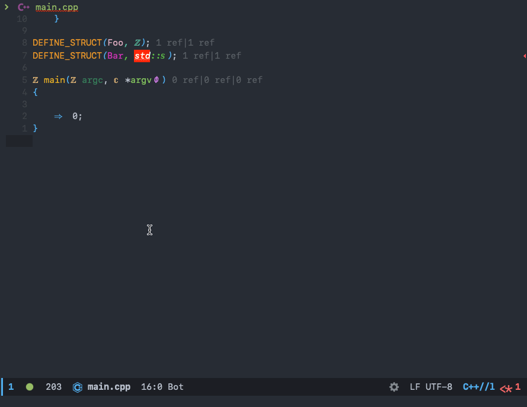

使用 ccls 预处理 C/C++
文章目录
前言
在使用 RTags 预处理 C/C++中，我介绍了使用 RTags 来进行预处理，然后在实践中发现了另外一个工具也可以做到，那就是 ccls 。
今天就来介绍在 ccls 如何查看预处理之后的代码。
安装 Emacs 包
ccls 的安装我之前写过，这里就不啰嗦了，详情可以参考使用ccls作为C/C++的补全方案、Build · MaskRay/ccls Wiki 。
接下来看一下如何在 Emacs 里配置 ccls
|
|
配置好了就能使用，你可以通过 ccls-preprocess-file 来查看预处理后的文件，以上篇文章的例子效果如下

效果和 RTags 是一样的。
但是 ccls 预处理的是文件，会把不需要预处理的代码都显示出来，也就是整个文件处理后的结果。而 RTags 可以选中某些代码进行预处理。